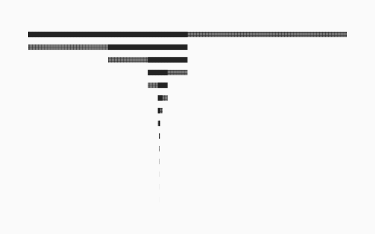
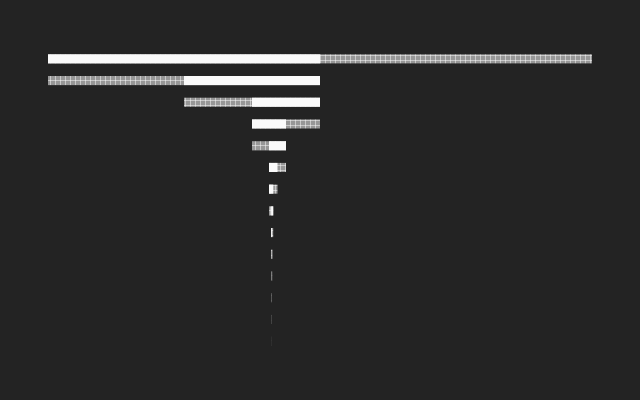

Level 4 · 14 dated works, 2016 to 2026, stacked by kind. No axis, no tick marks — and the one undated work is left out rather than placed somewhere convenient.

Level 3 · the fourteen steps that solved --ink-secondary. Each row is the live interval, the darker part the half that survived. It converges on #4c4b46 at 7.07 — the value in the token file.
Dark band · a separate file, never a filter
The same reading, drawn again on the dark ground with the dark band's own solved series. A CSS filter would move the lightness off its floor and the pattern off its period at once.

Both motifs carry their own ground, because an <img> reaches no custom property — the same reason the icon set ships a midtone for surface 1.